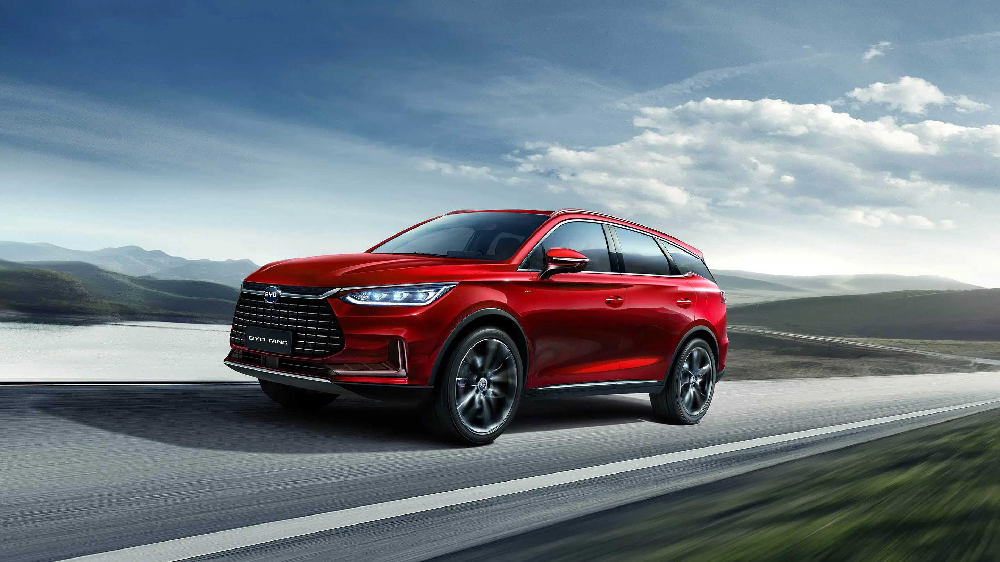
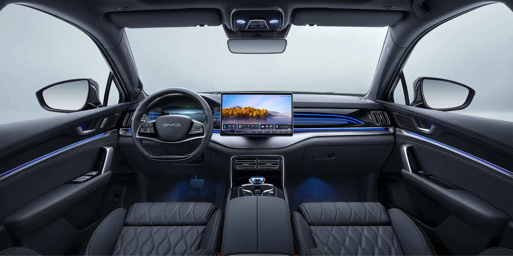

El BYD Tang EV es un SUV 100 % eléctrico de gran tamaño que combina lujo, tecnología y un alto rendimiento. Diseñado para ofrecer comodidad y seguridad, cuenta con un amplio espacio interior para hasta siete pasajeros, siendo una excelente opción para familias y viajes largos.
Equipado con la reconocida Blade Battery y desarrollado sobre la plataforma e-Platform de BYD, el Tang EV ofrece una conducción silenciosa, eficiente y una gran autonomía. Su interior incorpora una pantalla táctil giratoria, conectividad inteligente, asistentes avanzados de conducción y acabados de alta calidad que brindan una experiencia premium.
Gracias a su diseño elegante, su potente desempeño y sus avanzados sistemas de seguridad, el BYD Tang EV destaca como uno de los SUV eléctricos más completos de BYD, ideal para quienes buscan confort, innovación y movilidad sostenible.

S/250,000